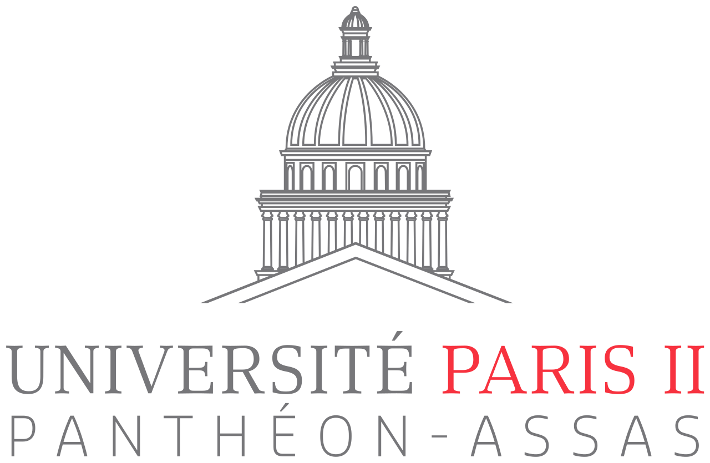

Aimen El hamzaoui

2 rue Charles Tournemire · Paris, 75017 · 0620933796 ·
aimen.elhamzaoui@gmail.com
Actuellement diplômée de mon
baccalauréat Sti2d spécialisé en
SIN(Système Informatique Numérique) . Je débute à l’université
Assas Panthéon paris 2 pour un
DEUST informatique réseau et
gestion.
A la recherche d'une alternance dans le domaine de l'informatique.